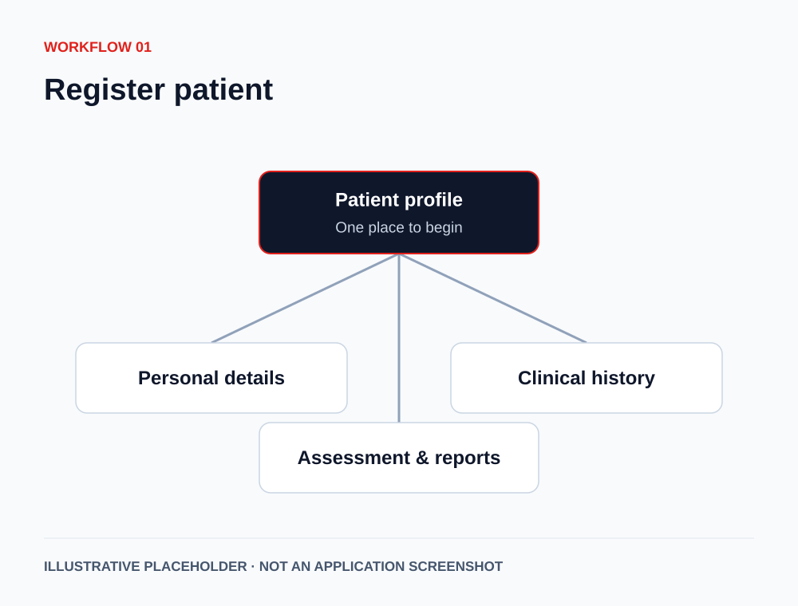
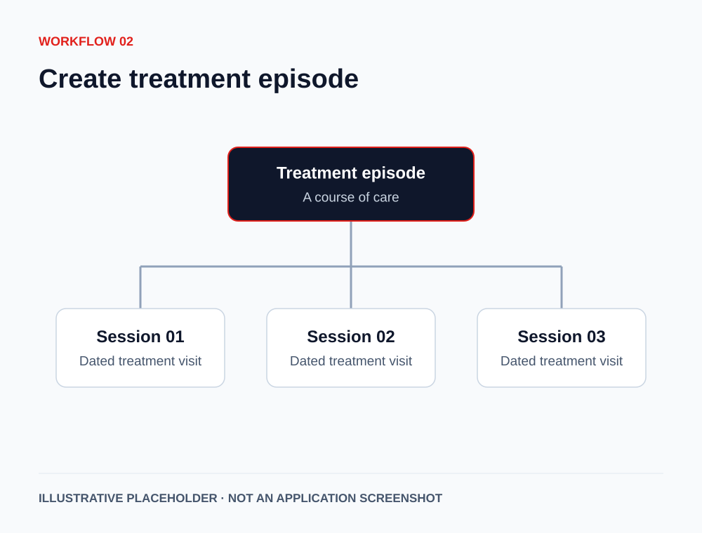
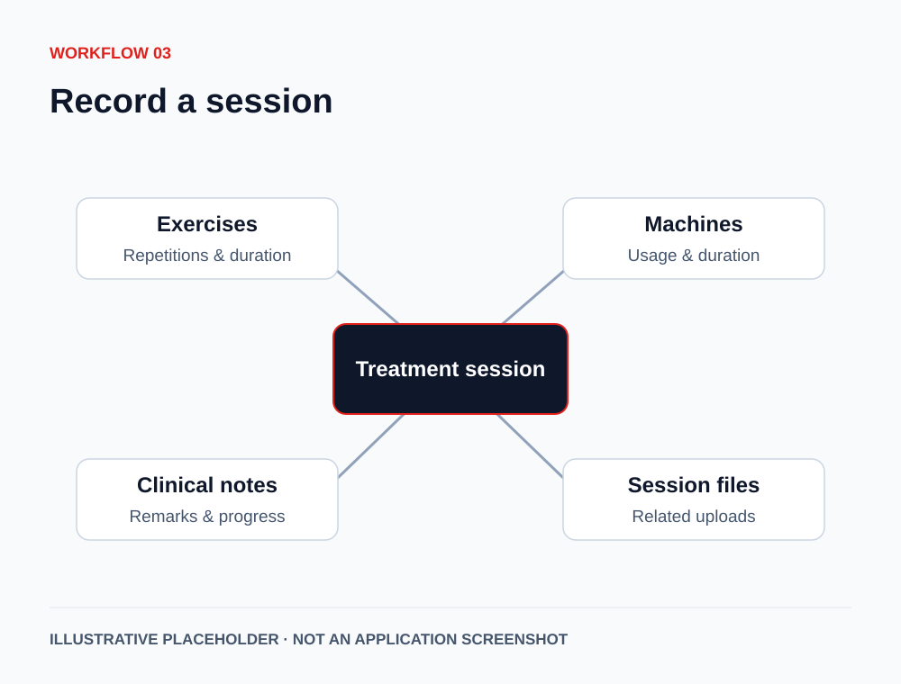
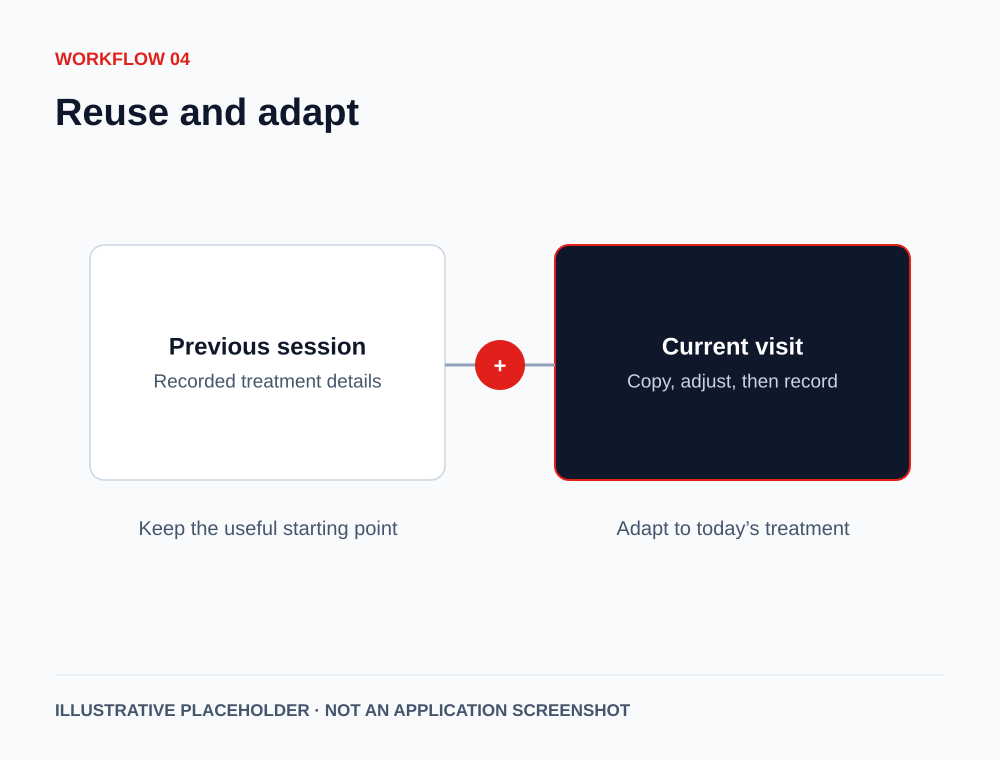
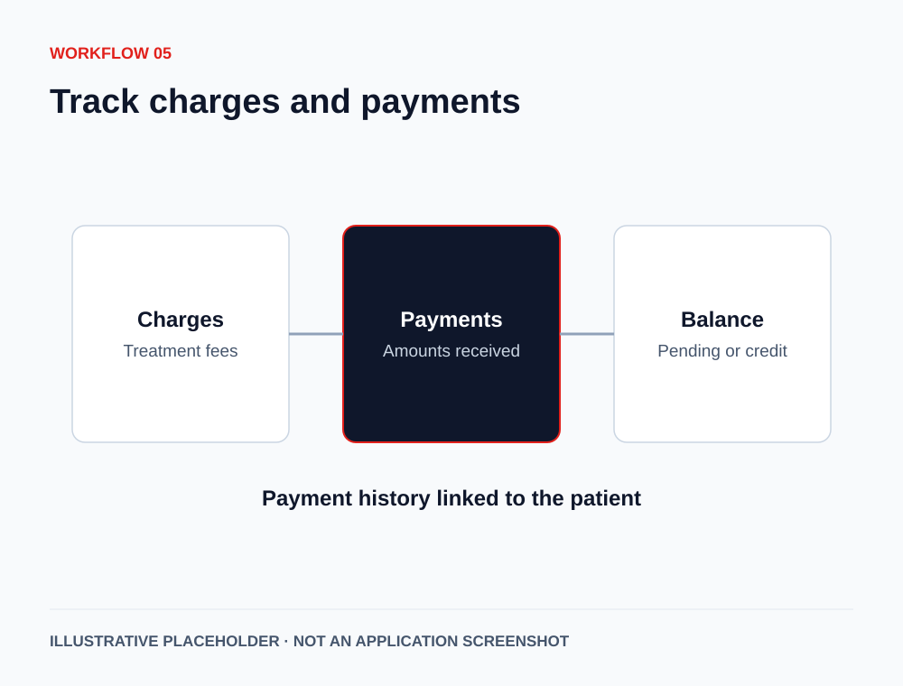
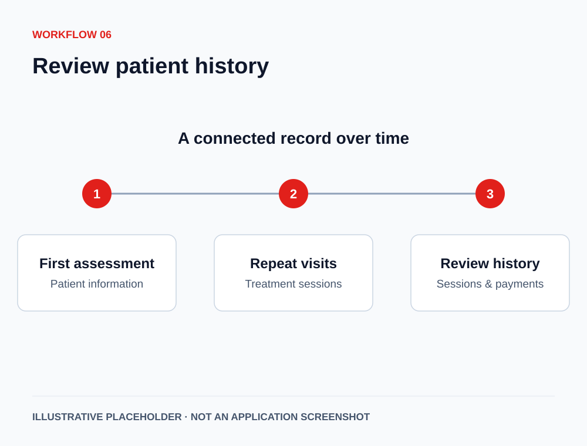

Where is the patient file?
Paper files, spreadsheets, and staff knowledge make the full picture harder to find.
Keep patient information together.
For independent physiotherapy clinics
Keep patient records, treatment sessions, exercises, clinical notes, and payments organised around each patient.
Built for the way physiotherapy clinics handle repeat visits.
Book a 20-minute demoRequest a free clinic workflow auditFictional patient · Treatment episode
Patient profile, assessment & treatment goal
Exercises, machines & clinical notes
Treatment history, charges & payments
The daily clinic reality
When records live in different places, each repeat visit starts with finding the last one.
Paper files, spreadsheets, and staff knowledge make the full picture harder to find.
Keep patient information together.
Previous treatment details can be difficult to review when another therapist takes the session.
Review dated sessions in context.
Similar exercises and treatment details get entered at every repeat visit.
Copy a prior session and adapt it.
Separate charge and payment records can make balances unclear.
Review charges, payments, and balances.
How it works
The patient stays at the centre. Each treatment episode brings together dated sessions, clinical details, and payments.
Select a step to explore the workflow.

Bring personal details, history, assessment, and uploaded reports into the patient profile.
Actual software visuals will be added here.
Organise a course of care around the patient’s treatment episode.
Actual software visuals will be added here.
Record exercises, repetitions, durations, machines used, remarks, progress notes, and session files where applicable.
Actual software visuals will be added here.
Copy the latest session or select an earlier one. Adjust the details for the current visit.
Actual software visuals will be added here.
Review treatment charges, payments received, pending amounts, and credit balances.
Actual software visuals will be added here.
See the treatment journey over time, with session and payment history linked to the patient.
Actual software visuals will be added here.Features by role
Explore how the documented capabilities fit the people who use your clinic’s records every day.
Keep an overview of people, treatment activity, and payments.
Keep the next session connected to the last.
Find the patient and manage day-to-day records.
Access their own history through the patient portal.
Before you decide
We’ll use the demonstration to understand your clinic’s workflow and discuss the scope that fits.
Call +91 98256 47083No. Appointment booking and automated reminders are not current features. The current workflow focuses on patient records, treatment sessions, exercises, clinical notes, and payments.
Yes. The documented patient portal lets patients view their own treatment episodes, session details, and payment history. It is intended for access to their own records, not other patients’ records. Access arrangements will be reviewed before a live rollout.
Migration scope must be reviewed during the demonstration. We’ll discuss your existing records and agree what can be brought across and how. Automatic migration is not promised.
The setup and training process will be discussed based on your clinic’s workflow, staff roles, and agreed scope. Timing, responsibilities, and costs will be confirmed before you proceed.
Pricing depends on the agreed setup, hosting, onboarding, and support scope. Request a demo and quote so you can review the complete cost for your clinic.
Patient-data handling, hosting, backups, recovery, and access responsibilities will be explained and agreed before a live clinic rollout. We do not make blanket security or compliance promises.
Let’s look at your clinic
Request a 20-minute product demo, or start with a free physiotherapy clinic workflow audit.
Your request has been sent. Tejas will contact you using the details you provided.